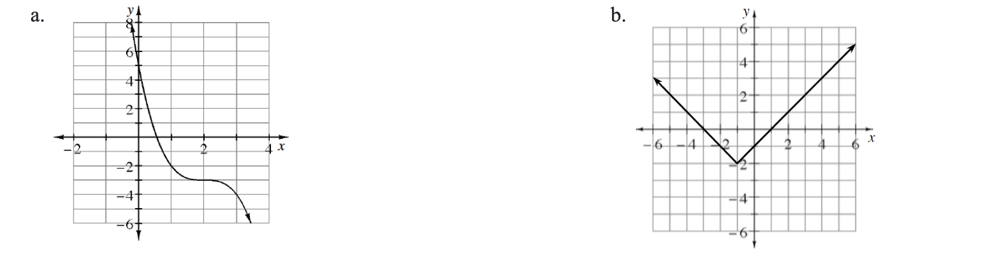
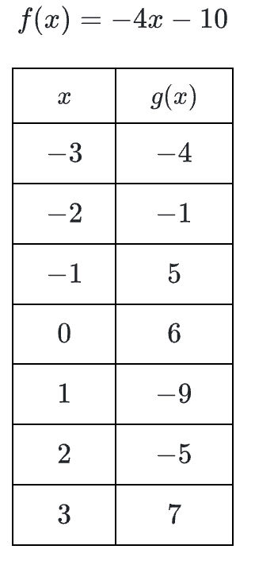
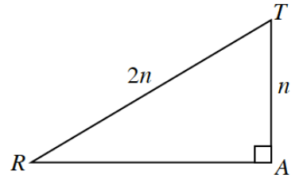

.figure-full image option. Homework Help text omitted. Figure filenames now use hyphens. Code comments included for easier editing.Graph \(f(x)=2\sin(x)-1\).
Use your graph of \(y=f(x)\) to graph \(g(x)=2\sin(3x)-1\) on the same set of axes.
How are the two graphs the same?
How are the two graphs different?
Graph two complete cycles of each of the following functions
\(f(x)=\cos(4x)\)
\(g(x)=\sin\left(\frac{\pi}{3}x\right)\)
Each graph below is a transformation of one of the parent graphs. Write an equation for each graph below.

Compute without a calculatorConvert each the following angle measures from degrees to radians or radians to degrees. Give exact values.
\(240º\)
\(-72º\)
\(\frac { 24 \pi } { 9 }\) radians
Use the functions at right to evaluate each of the following expressions.
\(f(g(1))\)
\(f^{-1}(g(-3))\)
\(g^{-1}(f^{-1}(-6))\)
\(f(x)=-4x-10\)

Which of the expressions below are equivalent to \(\sqrt [ 5 ] { 25 }\)?
\((5^2)^5\)
\(25^{-5}\)
\((5^2)^{1/5}\)
\(5\)
\((5^{1/2})^5\)
\(5^{2/5}\)
Given: \(\cos(θ)=\frac{3}{5}\)
Draw a right triangle and place values on the sides so that \(\cos(θ)=\frac{3}{5}\).
Draw a unit circle diagram to clearly show the two possible positions for \(θ\).
Use the Pythagorean Identity or a right triangle to solve for all possible values for \(\sin(θ)\).
Solve for all possible values for \(\tan(θ)\).
Right triangle, A,T, R, with vertical leg, A, t, labeled, n, hypotenuse, R,T, labeled, 2, n.Use \(▵RAT\) at right complete the following problems.
Determine the exact length of \(\overline{RA}\) in terms of \(n\). What type of triangle is this?
Using the triangle, write the ratios for:
\(\sin(R)\)
\(\cos(R)\)
\(\tan(R)\)
Use your results from part (b) to simplify \(\frac { \operatorname { sin } ( R ) } { \operatorname { cos } ( R ) }\). What do you notice?

Solve each equation for \(x\).
\(x^2+3x+2=0\)
\(-3x^2+10=3x\)